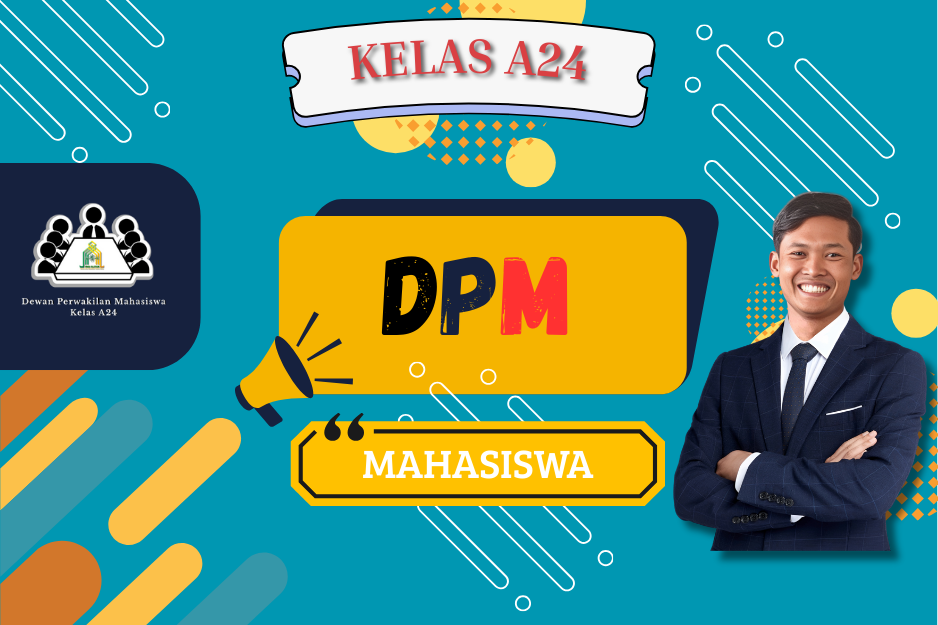

DPM atau Dewan Perwakilan Mahasiswa, adalah struktur kelas yang diketuai oleh Muhammad Amar Ma'ruf S.Pd., dengan pemilihan LuBerJuDil mahasswa a24. Berikut adalah Visi dan Misi DPM:
Membantu mahasiswa dalam memecahkan masalah, internal maupun eksternal. Sebagai jembatan antara dosen dan mahasiswa. Menjelaskan setiap tugas yang diberikan oleh dosen. Mendengarkan aspirasi dari Mahasiswa. Menjalankan sistem peerintahan dengan adil dan bijak.
Mencptakan generasi z yang melek Teknologi. Membangun relasi mahasiswa. Menambah kenyamanan kelas. menciptakan kelas yang aman dan positif condution. Mempraktikan sistem pemerintahan yang demokratif.
Rapat Internal meliputi : Ketua, Sekertars, Bendahara, dan Penasehat
Selengkapnya